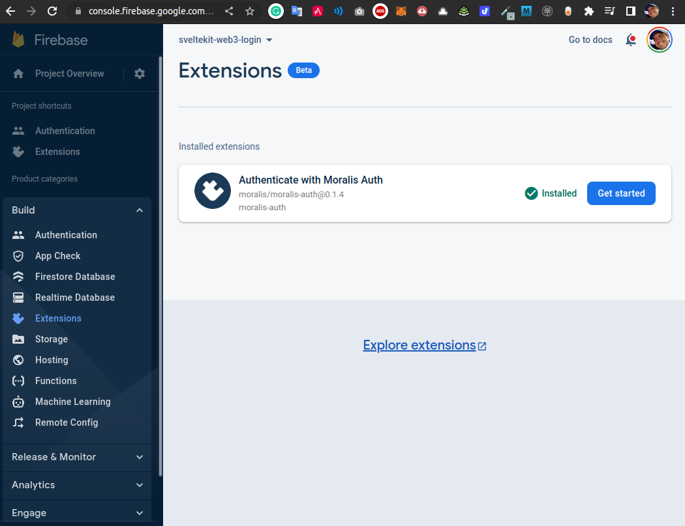

Updated on 2022-12-31 12:22:07 -0300.
1. References
-
Main:
-
https://www.youtube.com/watch?v=2HLxYYmZp94q
Firebase Web3 Authentication - Moralis Auth Extension - Oct 13, 2022
-
-
Other:
-
https://www.youtube.com/watch?v=iSg7uq2ZWgM
Use Moralis Web3 API from Firebase Frontend - Oct 10, 2022
-
2. Project setup
$ mkdir firebase-auth && cd $_
$ firebase login
$ firebase init hosting
> Use an existing project
? What do you want to use as your public directory? frontend/build
? Configure as a single-page app (rewrite all urls to /index.html)? No
? Set up automatic builds and deploys with GitHub? No
$ tree
.
|-- firebase.json
`-- frontend
`-- build
|-- 404.html
`-- index.html
2 directories, 3 files
3. Firebase extension install
$ firebase ext:install moralis/moralis-auth i extensions: ensuring required API firebaseextensions.googleapis.com is enabled... ⚠ extensions: missing required API firebaseextensions.googleapis.com. Enabling now... ✔ extensions: required API firebaseextensions.googleapis.com is enabled i extensions: Checking project IAM policy... ✔ extensions: Project IAM policy OK i extensions: information about 'moralis/moralis-auth@0.1.4': Name: Authenticate with Moralis Auth Publisher: moralis Description: Signs in the using Moralis Auth as the identity provider. License: Apache-2.0 Source code: https://github.com/MoralisWeb3/firebase-extensions/tree/main/auth APIs used by this Extension: iam.googleapis.com (To sign custom authentication token) iamcredentials.googleapis.com (To sign custom authentication token) stackdriver.googleapis.com (Monitoring) monitoring.googleapis.com (Monitoring) logging.googleapis.com (Monitoring) secretmanager.googleapis.com (Securely storing and reading OAuth 2.0 client secret) Roles granted to this Extension: Secret Manager Secret Accessor (Allows accessing the payload of secrets.) i extensions: This extension is in preview and is built by a developer in the Extensions Publisher Early Access Program. Its functionality might change in backward-incompatible ways. Since this extension isn't built by Firebase, reach out to moralis with questions about this extension. It is provided “AS IS”, without any warranty, express or implied, from Google. Google disclaims all liability for any damages, direct or indirect, resulting from the use of the extension, and its functionality might change in backward - incompatible ways. i Want to review the source code that will be installed? Download it here: https://storage.googleapis.com/firebase-mod-sources-prod/5cfdc4bbc3f482d7ced79022e6cd026249b991513bac9e43b5fee2d81be0026e ? Do you wish to continue? Yes i extensions: answer the questions below to configure your extension: Cloud Functions location: Where do you want to deploy the functions created for this extension? For help selecting a location, refer to the location selection guide. ? Which option do you want enabled for this parameter? Select an option with the arrow keys, and use Enter to confirm your choice. You may only select one option. Iowa (us-central1) Moralis API Key: The API key that is retrievable from the Moralis Admin Panel. ? Where would you like to store your secrets? You must select at least one value Google Cloud Secret Manager (Used by deployed extensions and emulator) Error: HTTP Error: 403, Secret Manager API has not been used in project 157302726728 before or it is disabled. Enable it by visiting https://console.developers.google.com/apis/api/secretmanager.googleapis.com/overview?project=157302726728 then retry. If you enabled this API recently, wait a few minutes for the action to propagate to our systems and retry.
Repeating the command above:
$ firebase ext:install moralis/moralis-auth i extensions: ensuring required API firebaseextensions.googleapis.com is enabled... ✔ extensions: required API firebaseextensions.googleapis.com is enabled i extensions: Checking project IAM policy... ✔ extensions: Project IAM policy OK i extensions: information about 'moralis/moralis-auth@0.1.4': Name: Authenticate with Moralis Auth Publisher: moralis Description: Signs in the using Moralis Auth as the identity provider. License: Apache-2.0 Source code: https://github.com/MoralisWeb3/firebase-extensions/tree/main/auth APIs used by this Extension: iam.googleapis.com (To sign custom authentication token) iamcredentials.googleapis.com (To sign custom authentication token) stackdriver.googleapis.com (Monitoring) monitoring.googleapis.com (Monitoring) logging.googleapis.com (Monitoring) secretmanager.googleapis.com (Securely storing and reading OAuth 2.0 client secret) Roles granted to this Extension: Secret Manager Secret Accessor (Allows accessing the payload of secrets.) i extensions: This extension is in preview and is built by a developer in the Extensions Publisher Early Access Program. Its functionality might change in backward-incompatible ways. Since this extension isn't built by Firebase, reach out to moralis with questions about this extension. It is provided “AS IS”, without any warranty, express or implied, from Google. Google disclaims all liability for any damages, direct or indirect, resulting from the use of the extension, and its functionality might change in backward - incompatible ways. i Want to review the source code that will be installed? Download it here: https://storage.googleapis.com/firebase-mod-sources-prod/5cfdc4bbc3f482d7ced79022e6cd026249b991513bac9e43b5fee2d81be0026e ? Do you wish to continue? Yes i extensions: answer the questions below to configure your extension: Cloud Functions location: Where do you want to deploy the functions created for this extension? For help selecting a location, refer to the location selection guide. ? Which option do you want enabled for this parameter? Select an option with the arrow keys, and use Enter to confirm your choice. You may only select one option. Iowa (us-central1) Moralis API Key: The API key that is retrievable from the Moralis Admin Panel. ? Where would you like to store your secrets? You must select at least one value Google Cloud Secret Manager (Used by deployed extensions and emulator) ? This secret will be stored in Cloud Secret Manager (https://cloud.google.com/secret-manager/pricing) as ext-moralis-auth-MORALIS_API_KEY and managed by Firebase Extensions (Firebase Extens ions Service Agent will be granted Secret Admin role on this secret). Enter a value for Moralis API Key: [hidden] ✔ secretmanager: Granted roles/secretmanager.admin on projects/157302726728/secrets/ext-moralis-auth-MORALIS_API_KEY to service-157302726728@gcp-sa-firebasemods.iam.gserviceaccount.com Website URI: The final website URI. It should contain a folder if present. For testing purposes, you may enter: http://localhost, but we recommend to enter a URI where you will release your app. This URI will be used in the authentication flow. ? Enter a value for Website URI: http://localhost Project Id of Service Account: The project id of the service account. To extract this value from the service account certificate you can use our converter: https://moralisweb3.github.io/firebase-extensions/service-account-converter/ ? Enter a value for Project Id of Service Account: sveltekit-web3-login-f0618 E-mail of Service Account: The e-mail of the service account. To extract this value from the service account certificate you can use our converter: https://moralisweb3.github.io/firebase-extensions/service-account-converter/ ? Enter a value for E-mail of Service Account: firebase-adminsdk-y72ct@sveltekit-web3-login-f0618.iam.gserviceaccount.com Private Key of Service Account: The private key of the service account. To extract this value from the service account certificate you can use our converter: https://moralisweb3.github.io/firebase-extensions/service-account-converter/ ? Where would you like to store your secrets? You must select at least one value Google Cloud Secret Manager (Used by deployed extensions and emulator) ? This secret will be stored in Cloud Secret Manager (https://cloud.google.com/secret-manager/pricing) as ext-moralis-auth-SERVICE_ACCOUNT_PRIVATE_KEY and managed by Firebase Extensions (Fir ebase Extensions Service Agent will be granted Secret Admin role on this secret). Enter a value for Private Key of Service Account: [hidden] ✔ secretmanager: Granted roles/secretmanager.admin on projects/157302726728/secrets/ext-moralis-auth-SERVICE_ACCOUNT_PRIVATE_KEY to service-157302726728@gcp-sa-firebasemods.iam.gserviceaccount.com ✔ Wrote extensions to firebase.json... ✔ Wrote extensions/moralis-auth.env i extensions: The behavior of ext:install, ext:update, ext:configure, and ext:uninstall has changed in firebase-tools@11.0.0. Instead of deploying extensions directly, changes to extension instances will be written to firebase.json and ./extensions/*.env. Then firebase deploy (--only extensions) will deploy the changes to your Firebase project. See https://firebase.google.com/docs/extensions/manifest for more details.
4. Firebase extension deploy
$ firebase deploy --only extensions
=== Deploying to 'sveltekit-web3-login-f0618'...
i deploying extensions
i extensions: ensuring required API firebaseextensions.googleapis.com is enabled...
✔ extensions: required API firebaseextensions.googleapis.com is enabled
i extensions: ensuring required API secretmanager.googleapis.com is enabled...
✔ extensions: required API secretmanager.googleapis.com is enabled
i extensions: ensuring required API compute.googleapis.com is enabled...
⚠ extensions: missing required API compute.googleapis.com. Enabling now...
i extensions: waiting for API compute.googleapis.com to activate...
i extensions: waiting for API compute.googleapis.com to activate...
i extensions: waiting for API compute.googleapis.com to activate...
i extensions: waiting for API compute.googleapis.com to activate...
i extensions: waiting for API compute.googleapis.com to activate...
✔ extensions: required API compute.googleapis.com is enabled
i extensions: These extensions are in preview and are built by a developer in the Extensions Publisher Early Access Program (http://bit.ly/firex-provider). Their functionality might change in backwards-incompatible ways. Since these extensions aren't built by Firebase, reach out to their publisher with questions about them. They are provided “AS IS”, without any warranty, express or implied, from Google. Google disclaims all liability for any damages, direct or indirect, resulting from the use of these extensions
moralis-auth (moralis/moralis-auth@0.1.4)
Source Code
Publisher Contact
? Do you wish to continue deploying these extension instances? Yes
i extensions: These extensions are in preview and are built by a developer in the Extensions Publisher Early Access Program (http://bit.ly/firex-provider). Their functionality might change in backwards-incompatible ways. Since these extensions aren't built by Firebase, reach out to their publisher with questions about them. They are provided “AS IS”, without any warranty, express or implied, from Google. Google disclaims all liability for any damages, direct or indirect, resulting from the use of these extensions
moralis-auth (moralis/moralis-auth@0.1.4)
Source Code
Publisher Contact
? Do you wish to continue deploying these extensions? Yes
The following extension instances will be created:
moralis-auth (moralis/moralis-auth@0.1.4)
i extensions: Verifying secret params for moralis-auth
✔ extensions Successfully validated create for moralis-auth
Extensions deploy had errors:
- create moralis-auth
; RESOURCE_ERROR at /deployments/firebase-ext-moralis-auth/resources/requestMessage: {"ResourceType":"gcp-types/cloudfunctions-v1:projects.locations.functions","ResourceErrorCode":"403","ResourceErrorMessage":{"code":403,"message":"Unable to retrieve the repository metadata for projects/sveltekit-web3-login-f0618/locations/us-central1/repositories/gcf-artifacts. Ensure that the Cloud Functions service account has 'artifactregistry.repositories.list' and 'artifactregistry.repositories.get' permissions. You can add the permissions by granting the role 'roles/artifactregistry.reader'.","status":"PERMISSION_DENIED","statusMessage":"Forbidden","requestPath":"https://cloudfunctions.googleapis.com/v1/projects/sveltekit-web3-login-f0618/locations/us-central1/functions","httpMethod":"POST"}}; RESOURCE_ERROR at /deployments/firebase-ext-moralis-auth/resources/issueToken: {"ResourceType":"gcp-types/cloudfunctions-v1:projects.locations.functions","ResourceErrorCode":"403","ResourceErrorMessage":{"code":403,"message":"Unable to retrieve the repository metadata for projects/sveltekit-web3-login-f0618/locations/us-central1/repositories/gcf-artifacts. Ensure that the Cloud Functions service account has 'artifactregistry.repositories.list' and 'artifactregistry.repositories.get' permissions. You can add the permissions by granting the role 'roles/artifactregistry.reader'.","status":"PERMISSION_DENIED","statusMessage":"Forbidden","requestPath":"https://cloudfunctions.googleapis.com/v1/projects/sveltekit-web3-login-f0618/locations/us-central1/functions","httpMethod":"POST"}}
Error: Extensions deployment failed.
Repeating the command above:
$ firebase deploy --only extensions
=== Deploying to 'sveltekit-web3-login-f0618'...
i deploying extensions
i extensions: ensuring required API firebaseextensions.googleapis.com is enabled...
✔ extensions: required API firebaseextensions.googleapis.com is enabled
i extensions: ensuring required API secretmanager.googleapis.com is enabled...
✔ extensions: required API secretmanager.googleapis.com is enabled
i extensions: ensuring required API compute.googleapis.com is enabled...
✔ extensions: required API compute.googleapis.com is enabled
The following extension instances will be configured:
moralis-auth (moralis/moralis-auth@0.1.4)
i extensions: Verifying secret params for moralis-auth
✔ extensions Successfully validated configure for moralis-auth
Extensions deploy had errors:
- configure moralis-auth
; RESOURCE_ERROR at /deployments/firebase-ext-moralis-auth/resources/issueToken: {"ResourceType":"gcp-types/cloudfunctions-v1:projects.locations.functions","ResourceErrorCode":"400","ResourceErrorMessage":"Function failed on loading user code. This is likely due to a bug in the user code. Error message: Error: please examine your function logs to see the error cause: https://cloud.google.com/functions/docs/monitoring/logging#viewing_logs. Additional troubleshooting documentation can be found at https://cloud.google.com/functions/docs/troubleshooting#logging. Please visit https://cloud.google.com/functions/docs/troubleshooting for in-depth troubleshooting documentation."}; RESOURCE_ERROR at /deployments/firebase-ext-moralis-auth/resources/requestMessage: {"ResourceType":"gcp-types/cloudfunctions-v1:projects.locations.functions","ResourceErrorCode":"400","ResourceErrorMessage":"Function failed on loading user code. This is likely due to a bug in the user code. Error message: Error: please examine your function logs to see the error cause: https://cloud.google.com/functions/docs/monitoring/logging#viewing_logs. Additional troubleshooting documentation can be found at https://cloud.google.com/functions/docs/troubleshooting#logging. Please visit https://cloud.google.com/functions/docs/troubleshooting for in-depth troubleshooting documentation."}
Error: Extensions deployment failed.
Repeating the command above:
$ firebase deploy --only extensions
=== Deploying to 'sveltekit-web3-login-f0618'...
i deploying extensions
i extensions: ensuring required API firebaseextensions.googleapis.com
is enabled...
✔ extensions: required API firebaseextensions.googleapis.com is enabled
i extensions: ensuring required API secretmanager.googleapis.com is
enabled...
✔ extensions: required API secretmanager.googleapis.com is enabled
i extensions: ensuring required API compute.googleapis.com is
enabled...
✔ extensions: required API compute.googleapis.com is enabled
The following extension instances will be configured:
moralis-auth (moralis/moralis-auth@0.1.4)
i extensions: Verifying secret params for moralis-auth
✔ extensions Successfully validated configure for moralis-auth
✔ extensions Successfully configured moralis-auth
✔ Deploy complete!
Project Console:
https://console.firebase.google.com/project/sveltekit-web3-login-f0618/overview

5. Project content setup
$ git init $ git add . $ git commit -m 'Initial commit'
$ git clone https://github.com/MoralisWeb3/youtube-tutorials ../youtube-tutorials
$ cp -r ../youtube-tutorials/FirebaseAuthExtension/* frontend/
$ # create a file named "apiKey" with its value to use in the next command
$ git apply <<EOF
diff --git a/frontend/src/App.js b/frontend/src/App.js
index 3f702ef..1e97cf6 100644
--- a/frontend/src/App.js
+++ b/frontend/src/App.js
@@ -6,7 +6,12 @@ import { signInWithMoralis } from '@moralisweb3/client-firebase-evm-auth';
import { getAuth } from '@firebase/auth';
const firebaseConfig = {
- "GET": "FROM FIREBASE ADMIN PANEL"
+ apiKey: "$(<apiKey)",
+ authDomain: "sveltekit-web3-login-f0618.firebaseapp.com",
+ projectId: "sveltekit-web3-login-f0618",
+ storageBucket: "sveltekit-web3-login-f0618.appspot.com",
+ messagingSenderId: "157302726728",
+ appId: "1:157302726728:web:9ac6926d113f3d4a58b87d"
};
const app = initializeApp(firebaseConfig);
@@ -53,4 +58,4 @@ function App() {
);
}
-export default App;
\ No newline at end of file
+export default App;
EOF
7. Deploy the project
$ npm run build $ firebase deploy --only hosting === Deploying to 'sveltekit-web3-login-f0618'... i deploying hosting i hosting[sveltekit-web3-login-f0618]: beginning deploy... i hosting[sveltekit-web3-login-f0618]: found 14 files in frontend/build ✔ hosting[sveltekit-web3-login-f0618]: file upload complete i hosting[sveltekit-web3-login-f0618]: finalizing version... ✔ hosting[sveltekit-web3-login-f0618]: version finalized i hosting[sveltekit-web3-login-f0618]: releasing new version... ✔ hosting[sveltekit-web3-login-f0618]: release complete ✔ Deploy complete! Project Console: https://console.firebase.google.com/project/sveltekit-web3-login-f0618/overview Hosting URL: https://sveltekit-web3-login-f0618.web.app